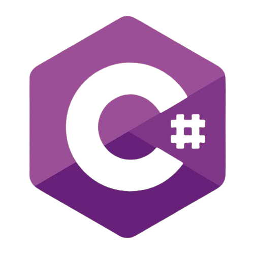
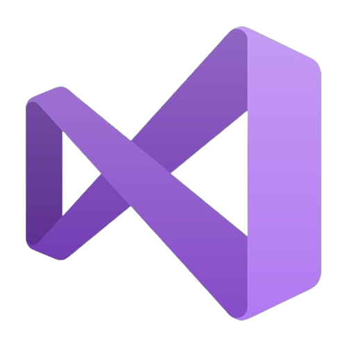

Cosmic Blasters 2D Game

Cosmic Blasters is a 2D space shooter game developed in Unity using C#. Inspired by classic arcade games like Space Invaders, this project features animated enemies, player controls, power-ups, high scores, and intuitive UI screens. The game showcases object-oriented design, scene management, and dynamic gameplay elements.
View on GitHubLoading Screen
The loading screen is the first element players encounter. It displays the game title and a dynamic loading animation, giving players a brief moment to anticipate the action. This screen uses Unity’s scene management system to transition smoothly into the main menu.
Home Screen
The home screen acts as the central hub of the game, allowing players to start a new game, view instructions, or check high scores. The interface is built with Unity’s UI system and styled to match the game’s futuristic space theme.
Instructions Screen
The instructions screen provides a quick overview of how to play. Players can click and drag to move the spaceship, while firing is handled automatically. The objective is to destroy all enemies, collect power-up pickups, and avoid dangerous obstacles like the skull. It's a fast-paced challenge where players aim for the highest score possible.
Gameplay Screen
The core of the game takes place in the gameplay scene. Players control a spaceship, shoot incoming enemies, and collect power-ups while avoiding damage. The game uses Unity physics, collision detection, and custom C# scripts to manage enemy waves, scoring, and player lives.
High Scores Screen
After the game ends, players can view the high scores screen, which displays a leaderboard of top scores saved locally. This feature uses persistent data storage and encourages replayability by challenging players to beat their previous records.
Technologies & Tools
- C#
- Unity
- Visual Studio